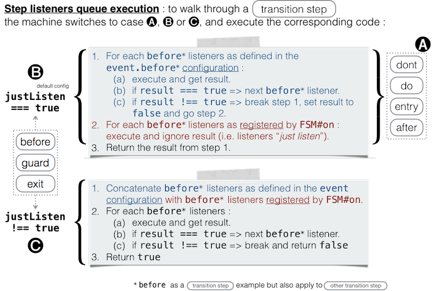

FSM
On https://github.com/jguillod/imed-javascript-finite-state-machine.
Getting started
This library is very easy to use. Actually! So, dont be afraid in front of some advanced features explained in detailed here.
Installation
npm install @imed.ch/javascript-finite-state-machine --save
This installation process will install the finite state machine module and :
- create a
build/directory with library minification; - create a
docs/directory; - run the tests.
Demo
Just open (double-click) file ./demo/index.html in your web browser.
API Documentation
Try the direct link FSM API.
To display on OSX run :
node node_modules/@imed.ch/javascript-finite-state-machine/docs/index
or :
cd path/to/@imed.ch/javascript-finite-state-machine
npm run show-docs
or on other OS you can just open ./docs/@imed.ch/javascript-finite-state-machine/<version>/index.html file (replace <version> with actual version, e.g. 1.0.0).
Example of a machine
In a bash Terminal launch NodeJS, e.g. :
$ node
then run the following code :
var FSM = require('@imed.ch/javascript-finite-state-machine');
var configs = {
"_": {
"version": "1.0.0",
"namespace": "ch.imed.test.1.0.0",
"initial": "dirty",
"debug": false
},
// ----- STATES :
"dirty": {
"actions": {
"edit": function(){},
"undo": function(){},
"redo": function(){}
}
},
"saving": {
"actions": {
save: function(cb, doSuccess){
// simulate an asynchronous Ajax request : cb(err, data) will be called with an error depending on doSuccess (just for simulation)
setTimeout(function(err, data){
cb(doSuccess ? null:'some error', doSuccess ? 'some data':null);
}, 300);
},
me: function(me){ return me || this; }
}
},
"saved": {
"exit": function(eventObj, flag){ return flag !== false /* calling fsm.trigger("edit", false) will cancel the transition */},
"actions": {}
},
// ----- TRANSITIONS :
"save": {
"from": "dirty",
"to": "saving",
"guard" : function(eventObj, flag){
return flag !== false;
}
},
"success": {
"from": "saving",
"to": "saved",
"before": function(e, flag){ return flag !== false /* calling fsm.trigger("success", false) will cancel the transition */ }
},
"failure": {
"from": "saving",
"to": "dirty"
},
"edit": {
"from": "saved",
"to": "dirty"
}
};
var fsm = new FSM(configs, function(machine){
console.log('Machine ready');
console.log('Current state is', machine.current());
console.log('Available events:', machine.availEvents());
machine.trigger('save');
console.log('Current state is now', machine.current());
console.log('Available events:', machine.availEvents());
});
which produces in the console :
Machine ready
Current state is dirty
Available events: [ 'save' ]
Current state is now saving
Available events: [ 'success', 'failure' ]
then, try executing :
console.log(`Current state is now ${fsm.current()}`);
// => Current state is now saving
console.log('Available events:', fsm.availEvents());
// => Available events: [ 'success', 'failure' ]
fsm.trigger('success');
// => true
fsm.current();
// => 'saved'
console.log('Available events:', fsm.availEvents());
// => Available events: [ 'edit' ]
and so on.
Other Examples
Look at the examples in folder
demo.
Also, look at the code in foldertest.
About Finite State Machine
See UML handbooks or UML state machine on Wikipedia for finite state machine (FSM) description. Our library is intended for a simple FSM, without substates, join or fork states.
A FSM can be described as a set of relations of the form :
Object(O) : State(S) x Event(E) → Transition (T), State(S')
which means an object O in a state S under the dispatched of an event E should perform the Transition T to enter a new state S'.
Transitions
A Transition is formalised as :
event(arguments) [guard] / do:function(event, ...arg);dont:function(event, ...args)
States
A State is formalised as :
state / exit:function(event, ...arg); enter:function(event, ...arg); actions:function...
entry and exit actions provide means for guaranteed initialization and cleanup. actions are the actions available (allowed to run) in the corresponding state.
No Asynchronous Transitions, please !
In page 73 of The Unified Modeling Language Reference Manual (1999, Addison Wesley Longman, Inc), James Rumbaugh & al wrote about transition action :
« Conceptually, its duration is negligible compared to outside event timing; therefore, a second event cannot occur during its execution. In practice, however, actions take some time, and incoming events must be placed on a queue. […] actions should not be used as a long transaction mechanism. Their duration should be brief compared to the response time needed for external events. Otherwise, the system might be unable to respond in a timely manner. »
So, we have chosen not to allow asynchronous transitions. Therefore, all functions and listeners in a transition should return synchronously. If you need the result of asynchronous actions for transitioning your state machine then you should probably rethink the design of your graph machine. For instance, a bad design will run an async Ajax request to save a document during a "save" transition. The transition runs from state "dirty" to state "saved", like in the following figure. Until the async request complete the machine is in an unknown state.

State("dirty") x Event("save")
→ Do(Ajax.request) ...(async)... → State("saved")
A better design will move the asynchronous process into an intermediate state "saving", as shown on the next picture :

So, an action in the "saving" state can run the async request and lock any transition (by guard or locking transitions described below) until the request complete (or its promise settled). Depending on the result of the request the next transition is triggered by a "success" or "failure" event.
State("dirty") x Event("save")
→ State("saving") x Actions(Ajax.request)
then : Event("success") → State("saved")
catch : Event("failure") → State("dirty")
In summary : run any async process in actions state but not in transitions functions nor in machine listeners.
See also 6. Security : Locking Transitions to learn how you can lock the machine so your code can keep the saving process under control. Something like :
lock(key)
State("dirty") x Event("save")
→ State("saving") x Actions(Ajax.request)
then : Event("success") → State("saved")
catch : Event("failure") → State("dirty")
finally : unlock(key)
The justification for this implementation choice of only synchronous transitions can be summarized by a comment of DmitryMyadzelets on Jun 9, 2015 :
Asynchronous transition functionality makes automata not deterministic. If a transition requires time, it is actually not a transition. […] For an external observer, an automaton should always have a current state. Otherwise: "What's your state? I have no idea, I'm making a transition, please wait, wait, wait...".
Loading the library
-
In Web Browser :
<!DOCTYPE html> <html> ... <script src="../build/fsm.min.js"></script> <script src="demo-jfg-2.js"></script> </body> </html> -
In NodeJS :
var FSM = require('@imed.ch/javascript-finite-state-machine'); var machine = new FSM(require('@imed.ch/javascript-finite-state-machine/demo/fsm-definition.js'), function(fsm){ console.log(fsm, 'Machine ready'); console.log('Available events :', fsm.availEvents()); }); -
To log verbose messages on the console, instead of file
./build/fsm.min.jsload or require file./build/fsm-debug.min.js.
Setting up a Machine to Work
The normal workflow to set up and run a FSM is :
-
Instanciate a machine with the data definition machine (see also FSM) :
var fsm = new FSM(configs, onCreated);Configsmay define functions for :- state properties
entryandexit; - transition properties
guard,do,dontbeforeandafter.
The signature of those functions is the same as registered machine listeners (see FSM#listener). We will call such functions as the CONFIGS LISTENERS.
To create another machine which runs with the same configs as the previous one, but with its own state and own registered listeners, write :
var anotherFsm = fsm.factory(initialState, callback); - state properties
-
Optionally, register some listeners (see also FSM#on). We will call the registered listeners MACHINE LISTENERS :
fsm.on(machineEvent, [scope,] listener, ...options); // unregister with: fsm.un(machineEvent, [scope,] listener); -
Trigger an available event to execute a transition (see also API docs FSM#trigger) :
var res = fsm.trigger(triggerEvent, ...args); -
Deal with results when appropriate :
if(!res){ // do something console.log('Transition did not complete because :', fsm.reason); } -
updateControls( fsm.availEvents() ); fsm.actions.currentStateAction1(...args); -
Repeat from step 3 (or 2).
1. Instanciation.
To instanciate a Finite State Machine :
var fsm = new FSM(configs, callback);
configs
(see docs for detailed FSM API)
The following properties of the configs object apply :
-
_: metadata of the machine, i.e. an object with meaningful properties :debug:truefor debugging mode to display verbose messages in console.initial: the initial state name of the machine. This set the current state of this machine on instanciation. It defaults tonone.justListen: default totrue, i.e. return value of registred listeners is ignored. Iffalse, then registred listeners (see FSM#on) behave like configuration handlers (guard, exit, do, dont, entry), i.e. their return value can abort their respective transition step.
and also any other properties you want to store, e.g. :
version: your version of the machine definition.namespace: your namespace of the definition.
Any other configs properties are either state or event definition. The name the properties is the event or state identifier :
-
"state": the property name is the identifier of a state (its name). It is any otherconfigsproperty containing one or more of :-
entry: the entryfunction(eventObj, ...arg)or array of. -
exit: the exitfunction(eventObj, ...arg)or array of. -
actions: an object containing the actions for this state. Properties are name of the action and its value is a Function (signatures are up to you) :actions:{ flip: function(a, b, c, d){...}, push: myPushFunction }
-
-
"event" :the property name is the identifier of a trigger event (its name). It is any otherconfigsproperties whose value is either an array of Transitions Object or a single Transition Object. One Transition Object can contain the following set of properties :from: is the mandatory source state name (String), i.e. the one which will exit on successfully completed transition.to: is the target state name (String), i.e. the one which will enter and be the new current state on successfully completed transition. Omit this property (undefined) if the transition is an internal transition.before:function(eventObj, ...arg)to be executed before the transition. If one does not returntruethe transition is cancelled.after:function(eventObj, ...args)executed at the end of the trigger (even if guard failed or error occurred).guard:function(eventObj, ...args)if one does not return true, the transition does not occur.do:function(eventObj, ...args)executed after guard succeed (returnstrue).dont:function(eventObj, ...args)executed after guard does not returntrue.
See Machine and Configs Listener for a description of the
function(eventObj, ...args)and its arguments.
callback
The callback function is called when instanciation has completed. The callback signature is :
function(fsm)
where fsm is the new instance machine.
2. Register Machine Listeners.
You can optionaly, register some machine listeners (observers of the machine).
Observing the Machine
Trigger versus Machine Events
IMPORTANT !
DO NOT confuse the events dispatched to the machine by FSM#trigger with the events emitted by the machine. You should distinguish those two different kind of events for our FSM :
-
Trigger Event.
The FSM is the listener of trigger events.
To tell the machine a trigger event in order to execute a state transition, run one of :
fsm.trigger(triggerEvent, ...args); // to tell the machine which transition to do fsm.t(triggerEvent, ...args); // to tell the machine which transition to do fsm.e[triggerEvent](...args); // to tell the machine which transition to do, e.g. fsm.e.stop(args)The set of available trigger events is defined in the
configsoption on creating a new machine (see FSM). Each trigger event corresponds to one or more transitions. -
Machine Events.
The FSM is the emitter of machine events (here, FSM is not an observer but the one which fires its own named events).
During state transition the machine emits machine events (which names are described below under Machine Event Identifiers). Such events are distinct from the former Trigger Events. To start listening to Machine Events use FSM#on :
FSM#on
To register a listener for Machine Events. Arguments are :
fsm.on(eventPattern, [scope,] listener, ...options){/*...*/} // to listen to the machine own events
-
eventPattern: which is either astringequals to the Machine Event Identifiers, or aRegExpto test with the Machine Event Identifier.IMPORTANT : the same machine listener function can be called many times during the same transition if the RegExp matches many machine event identifiers!
For instance to register a tracer listener to be called at each step of a transition, do :
fsm.on(/.*/, listener); // => listener will be called at each step of any transition. -
scope: is the optional this scope for the listener function (i.e. on event matching eventPattern => executescope.listener(…)). -
listener: is the callback (listener) when event matches. -
options: is the rest of the arguments which will be passed as an Array in theoptionsproperty of theeventObjof the callback listener (and not in the args…).
FSM#un
To unregister a listener for machine events, use :
fsm.un(eventPattern, [scope,] listener){/*...*/}
where eventPattern, listener and scope are same as in FSM#on.
Machine Events
So, during a transition the machine emits machine events which are not to be confused with the events of the graph definition (=configs) of the finite state machine. This section explains how a machine event identifier is named and how to listen to machine events.
Machine Event Identifiers
When a state transition is triggered by an event using fsm.trigger(event) then the candidate transition will be the composition of a succession of steps : the transition path. At each of these steps the machine emits an Machine Event. A Machine Event identifier (eventName) is formatted :
eventName := <prefix> "-" <suffix>
<prefix> := one of {"before"|"guard"|"dont"|"exit"|"do"|"entry"|"after"}
<suffix> := <state-token> | <transition-token>
<state-token> := <from> | <to> # <from> if <prefix> is "exit", <to> if <prefix> is "entry".
<transition-token> := <event> "-" <from> "-" <to>
<event> := the name of the Transition Event (as defined when instanciating your machine).
<from> := the source state name for the transition (as defined when instanciating your machine).
<to> := the target state name of the transition or "undefined" if the transition is an internal transition (as defined when instanciating your machine).
So, a fsm publishes its machine events that listeners can register to (with fsm.on()). Such machine events are identified according to the following list, simply replace <event> by the event name, <from> and <to> by the state names :
before-<event>-<from>-<to> : the event of a transition has been triggered but transition has not yet been validated nor started.
guard-<event>-<from>-<to> : guard listeners have been called.
dont-<event>-<from>-<to> : a guard has canceled the transition.
exit-<state> : exit state listeners have been called.
do-<event>-<from>-<to> : do listeners have been called.
entry-<state> : les entry state listeners have been called.
after-<event>-<from>-<to> : the transition has completed (either with success or canceled)
! To know about the Machine Events Identifiers is only useful to register a listener because the machine event identifier should match the
eventPatternarguments ofFSM#onfor the listener to be called.
Example :
Given a transition defined as :
// panic(arguments) [guard] / do:function(event, ...args);dont:function(event, ...args)
panic : [{
from : 'green',
to : 'red',
guard : guardFn
do : ...
}]
then, as explained in more details below (see Paths of a Transition), during a complete state transition the machine will emit this sequence of machine event identifier :
"before-panic-green-red"
"guard-panic-green-red"
"dont-panic-green-red"
"exit-green"
"do-panic-green-red"
"entry-red"
"after-panic-green-red"
So, based on the previous definition of the "panic" transition :
fsm.on('before-panic-green-red', listenerFn);
will invoked listenerFn before the exact transition starts.
fsm.on(/^before.*/, cb);
will be invoked before any transition occured (whatever the trigger event, source and target states).
fsm.on(/^before-panic-.*/, cb);
will be invoked before any transition occured on trigger event panic (whatever the source and target states).
fsm.on(/^before-.*-red$/, cb);
will be invoked before any transition occured (whatever the trigger event and source state) but only for target state red.
fsm.on(/-red$/, cb);
will be invoked for any transition which target state is red and for entry-red and exit-red machine events.
Machine Listeners and Configs Listeners
Your machine listeners and the configs listeners signatures are the same :
function listener(eventObj, ...args)
where
-
...argsare the arguments as passed by thefsm.trigger(triggerEvent, ...args). -
eventObjis a hash which properties set depends on the transition step, i.e. for :-
guard,do,dont,beforeandaftersteps for an external transition :{ step, event, from, to, options } -
guard,do,dont,beforeandaftersteps for an internal transition :{ step, event, from, options } -
exitandentrysteps for exiting/entering state :{ step, state, options }A state is unaware of the transition involved (UML theory). Therefore,
eventObjfor a state exit/entry listener does not contain data on the transition. Exit/entry listeners are intended for cleanup versus initialization of the state.where :
-
stepis the name of the current step for the ongoing transition. A step name is among :- {
"before" | "guard" | "dont" | "do" | "after"} for transitions; - {
"exit" | "entry"} for exiting/entrering states.
- {
-
eventif the trigger event name. -
fromis the source state name of the transition. -
tois the target state name of the transition. -
stateis either the exit state name (ifstep === "exit") or the entry state name (ifstep === "entry"). -
optionsis an Array containing arguments as given :- either for config listeners in the configs transition object (
optionsare defined in the corresponding transition configuration but not in state configuration), - or for machine listeners on registering them with
fsm.on(eventPattern, [scope,] listener, ...options).
- either for config listeners in the configs transition object (
-
-
3. Trigger a Transition
To execute a state transition trigger a permitted event of the machine with either of :
fsm.trigger('triggerEvent', params);
fsm.t('triggerEvent', params);
fsm.e['someTriggerEvent'](params);
Or, make an alias :
var e = fsm.t;
e[triggerEvent](params);
e.start(params); // "start" is a trigger event name
You can test for the result :
if(fsm.trigger('someTriggerEvent', params) === true){
// complete [external] transition : guard [→ exit] → do [→ entry]
processSuccess();
} else {
// either an error was thrown or a before|guard|exit cancelled the transition
console.error("Transition failed. Reason :", fsm.reason);
processFailure();
}
To test if the machine is transitionning yet :
fsm.isInTransition()
returns true if this FSM is currently in transition, false otherwise. If the machine is in transition you cannot trigger an event.
Configs Listeners
The configs to instanciate the machine contains the definition of transitions and states. The value of some of their properties is an array of configs listeners or a single configs listener. Such properties are the following :
-
for transitions :
guard do dont before after -
for states :
exit entry
So, each of these properties can be either undefined, a function or an array of functions. Every function shares the same signature as Machine Listeners, i.e. :
function(eventObj, ...args);
Paths of a Transition
A trigger event (A) initiates a state transition which walks along a definite path (B) of the transition. The path is made of a set of transition steps (C). The next step is selected on the result returned by the current step evaluation (D) (i.e. step listeners queue execution).
(A) An event is triggered by :
fsm.trigger(triggerEvent, ...args)
(B) Then, the machine starts the transition sequence (before → ... → after).
In our machine there are actually 5 alternate paths (sequences of steps) for a transition (see also next figure) :
(1) before → after :
if a before listener does not return
trueor throws an error, the transition is canceled.(2) before → guard → dont → after :
if a guard listener does not return
trueor throws an error, the transition is canceled anddontlisteners are executed.(3) before → guard → exit → dont → after :
if a exit state listener does not return
trueor throws an error, the transition is canceled anddontlisteners are executed.(4) before → guard → exit → do → entry → after :
the full external transition.
(5) before → guard → do → after :
the full internal transition.
The following figure summarizes the five possible paths of a triggered transition :

(C) For each step (before, guard, do, dont, exit, entry or after) of the transition path the machine compiles a list of functions to be called. This list is the concatenation of the matching configs listeners and machine listeners.
NOTE :
- CONFIGS LISTENERS are defined in machine instanciation (see new FSM()). They cannot be changed and are always called before machine listeners.
- Registered listeners FSM#on are MACHINE LISTENERS. They can be unregistered with FSM#un.
- The order in which listeners are registered is important and you can build your list of functions (queue) giving for some the priority (or rights) to abort the queue execution.
- In our implementation
beforeandafterlisteners are executed at the beginning and the end of paths.
(D) Evaluate each function of the list of listeners for the step and check its result value. This value returned by before, guard and exit steps will determine the next step in the transition path (the true or false result in the previous figure).
You must remember to always return
trueorfalsein your Configs Listeners and whenconfigs._.justListen === falsein your Machine Listeners.
To decide which path to follow the FSM takes all listeners of the first step (i.e. before) and proceed according to the next figure below. Depending on the result of this step, the machine decide which step is the next according to the figure above.

For instance, the path of a successful external transition will be composed by this sequence of steps : before → guard → exit → do → entry → after. Each of these steps will evaluate the corresponding configs listeners, and also the corresponding machine listeners depending on the kind of the step and the configs._.justListen value.
Or, for instance the path of a successful internal transition will be composed by this sequence of steps : before → guard → do → after. Each of these steps will be evaluated as described above.
4. Deal with results when appropriate.
After the transition fsm.trigger() (or its aliases) returns a boolean value :
false: the transition did not complete. You can request thefsm.reasonvalue to get more information.true: the transition completed successfully andfsm.reason === null.
5. Enjoy the machine.
You can query the machine to know the available state actions, the available trigger events, the current state of the machine or some other stuff.
Run Actions
The actions defined in the configs are available for the Current State :
fsm.availActions() // ["swap", "alert"]
You can run any available actions for the current state with :
fsm.do.swap(8,10); // the swap action for the current state
fsm.do.alert("hello from state "+ fsm.current()); // the alert action
Only actions defined in the current state will be callable. Signatures of actions are yours and you define them in any state configs of the machine.
Machine Utilities
Checking available Transitions
To return a list of available events in the current state :
fsm.availEvents()
To test if some transitions are allowed, run :
fsm.can(event [, testGuard [, ...params]]) // return true|false
where :
event: is an event name to test availability for the current state.testGuard: iftruethen return available events for transitions which succeed on guard tests.param: Optional parameters as inFSM#trigger.
The result depends on optional arguments :
- Two or more arguments : the
canfunction returns eithertrueif the event is allowed in the current state, otherwisefalse. - One argument === true : it returns an array of available events for the current state (see
availEvents(). The guard listeners are checked. - Without arguments : same result but without testing guard.
State Utils
Test if the machine is in a given state :
fsm.is('state') // alias (fsm.current == 'state')
returns true if the current state is state.
Get the current state name. READ ONLY! Setting its value bypass the normal machinery!
fsm.current()
Other Utils
Query the version of the fsm library.
fsm.engineVersion()
Query the version of the configuration you used to instanciate the machine.
fsm.version()
Query the current status of the machine :
fsm.getStatus()
to get something like :
{
"engine": "JFG's FSM engine v 0.3.0 Thu Dec 31 2015 16:04:03 GMT+0100 (CET)",
"version": "0.1",
"state": "green",
"pending": false,
"namespace": "ch.imed.fsm.example.1"
}
To go in debugging mode and get verbose messages in the console.log do :
fsm.debug = true;
6. Security : Locking Transitions
IMPORTANT
Members of an instance FSM are public and could be changed by code. So, the security discussed here is just a convenient feature and not actually secure.
Your code can lock the machine, so no other object will be able to trigger a transition :
var lockKey = fsm.lock();
Now any attempt to call fsm.trigger() will return false with a reason :
fsm.trigger("reboot");
// => false
// fsm.reason === "Trigger is forbidden by a lock"
But the following code will work :
fsm.unlock(lockKey);
fsm.trigger("reboot");
Or more simply (and maybe to make sure that no other thread can trigger an event between you unlock and trigger calls) :
fsm.trigger("reboot", lockKey);
Notes :
- You can use
fsm.t(event, lockKey, ...args)orfsm.e.<event>(lockKey, ...args)alias style. - After a call to
fsm.trigger(event, lockKey, ...args)the fsm is kept locked.
Also, you can use your own lockKey to be shared by any objects of your code :
var lockKey = fsm.lock(yourLockKey);
If yourLockKey is evaluated as falsy then a new key is returned, otherwise after the call lockKey === yourLockKey.
To secure a FSM just at instanciation, write :
var lockKey, fsm = new FSM(configs, function(fsm){
lockKey = fsm.lock();
});
// Then, to trigger an event you must pass the lockKey as in :
fsm.trigger('start', lockKey, new Date(), anOtherParam);
Roadmap - To Do
We expect version 2 with the following features :
- Rewrite with ES6 ?
- Maybe add a queuing feature of incoming events? If an event is triggered during a transition, it will be put in a queue of events to be executed at the completion of the last running transition.
Please, request other features you are willing to get on next version.
© imed.ch - Last modified Thu Jun 20 17:03:06 CEST 2019